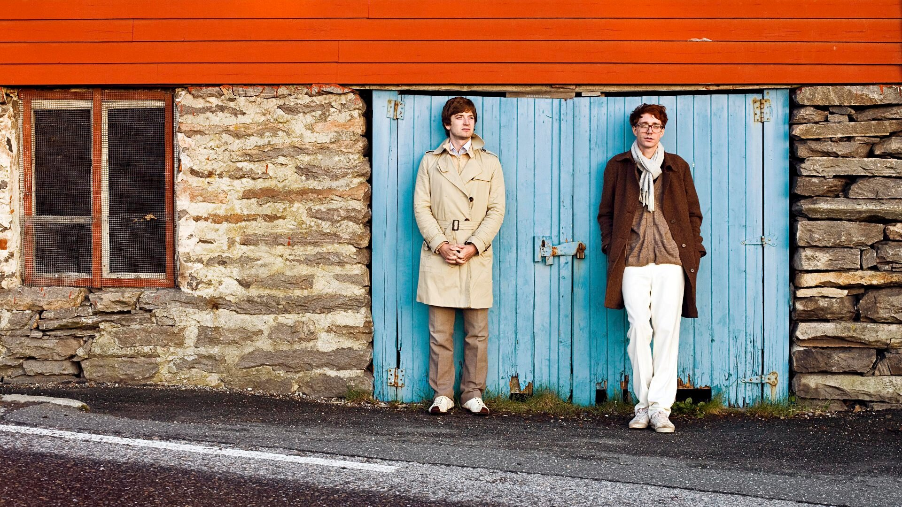

Novedades

Después de 12 años de silencio, el regreso de la dupla noruega se siente tan elegante y en paz como sus primeros ya clásicos discos.
Después de 12 años de silencio, el regreso de la dupla noruega se siente tan elegante y en paz como sus primeros ya clásicos discos.